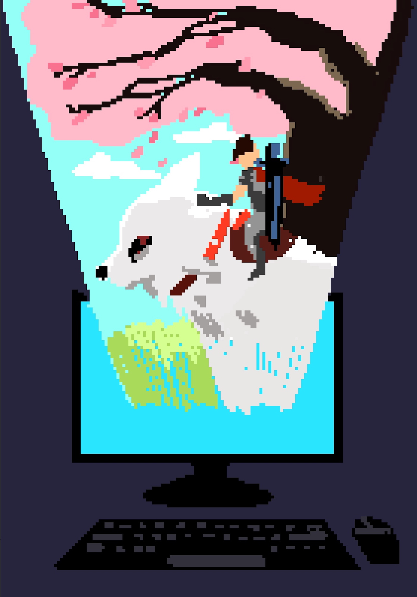

People always say, ‘You’re wasting your time doing that every day.’ or ‘You could have done some other productive things instead of doing that all day.’ Well, I see the point that they are making. It’s true that even if you’re good at gaming, the gaming skills that you have learned or trained for countless hours won’t help you get a good job, it wouldn’t help you defend yourself when you’re getting mugged, and it certainly wouldn’t help you swim if you are drowning. Video games have a terrible transition to real-life skills. You can’t learn how to swim in a video game and then suddenly learn it in real life, so it is entirely understandable when some people say gaming is a waste of time. Then why do people still play them? Are there any benefits to playing video games?
I love playing video games. I play video games almost every day. I started playing video games when I was very young. I remember having a second-hand computer that my dad bought for me. It was kind of slow, and the computer fans were noisy. It felt like it was gonna blow up every time I turned it on. Still, I didn’t care much about it at all. All I cared about was what I should do every day with my online video game character and how to level up as fast as possible. It was the most blissful time of my life. I was excited to play video games every day. After school, I would rush back home to quickly finish my homework. After I’m done, I would call my friend, Joseph, to go online and play together. Joseph is my childhood friend. Our interests were quite similar. We were basically like brothers. We did things together like playing video games and basketball. In this video game, we would introduce each other to different kinds of games and play each one. One of those games is called Runescape.
Runescape is a massively multiplayer online role-playing game. It’s a game where many people worldwide join in a fantasy world called Gielinor, where they can do quests: killing monsters and doing various kinds of skills like fishing and woodcutting. It is a typical online role-playing game but with a complex concept. The game gives a lot of freedom to the players. It is also the reason why my friend Joseph and I loved it. Because we could do whatever we wanted as long as the game supports it. I have many memories of playing this game. I would explore the world of Runescape and make friends on the journey. We would share techniques and skills that we learned, but the most memorable conversations with my friends knew their culture. We would share our names and what we had been doing that day. It was entertaining and eye-opening, understanding different cultures from around the world. I had an online friend from the Philippines, and we would talk about the differences and similarities of our lifestyles. We would relate to each other when we Filipinos eat rice in the morning as breakfast, and the difference we had was commuting to school. My friend had to wake up at 6 A.M. because going to his school took 2 hours. While me living in Macau only takes around thirty minutes to go to school. When we talked about our similarities and differences, I found out that talking to other people could be fun, and this realisation has helped me in the real world.
I’m a timid person. You can say that I am an introvert. Sometimes I would find it hard to talk to my classmates or other strangers. I was way too nervous while talking to other people in person. I would always think of topics to talk about with my friends and prolong the conversation. I was overthinking a lot, and when I finally dared to speak with my classmates, my brain would suddenly stop functioning. And I didn’t know how to start the conversation. It was so frustrating and embarrassing that I actually stayed up all night thinking about improving my social skills. Then, I remembered how I communicated with my online friends. It was very smooth and not awkward. I realised that communication doesn’t need to be that complicated. All you need to do is just flow with it. Overthinking conversations would only make it more awkward. After that night, I started not overthinking much and just enjoyed the moment. Although I sometimes still have trouble keeping up on some conversations, it’s far better than before.
There are countless people having trouble with social communication skills. It is a common problem for children and teens who are usually shy and introverted. Gaming could help them improve their social skills. Playing cooperative games or co-op games could help children work together and communicate what objectives they have to complete and strive together to achieve their goal. This can also improve their teamwork skills and be a team player. This is an important skill to have in a working environment. Workers usually work with teams. It is essential to constantly communicate with team members to help progress work faster and avoid time wasted on works already being handled. Playing co-op games doesn’t only help ordinary children and teens to improve social skills. It can also help children who have autism. Playing co-op games in a group setting can help develop their communication skills and other critical social skills, which autistic children have trouble with.
When I was studying at primary school, my favourite time of the year was summer, obviously. It was the best time of the year because I had a lot of free time for myself. And free time means a lot of gaming! I remember one summer where I played games all day with my best friend, Joseph. By all day, I told the whole day. We were kind of obsessed with gaming.
We would play the same game every day. We would talk to each other while playing Runescape. We would share what happened on that day, laughed and pranked each other. I am glad that I had Joseph as a friend. One day, while I was playing games, my father rushed into my room and started yelling at me, “All you do is stay in this room and use that computer all day. Shut that computer off, and don’t open it until I say so!” I then started to tear up and slowly move my mouse to the shutdown button. After I shut my computer down, my father then went out and slammed the door.
I had mixed emotions when I heard what my father said that day. At first, I was a bit scared. In an Asian family household, it is pretty common to get smacked with a belt. I was expecting to get slapped on my butt-cheeks. Fortunately, my father didn’t pull his belt out. Secondly, I was angry because I was in the middle of a game, and all my progress was lost. The feeling of getting interrupted while gaming kind of sucked but it was understandable. Playing games all day, every day, is quite extreme, and if the behaviour is prolonged, it can become an addiction. So understanding that it was my fault, I decided to apologise to my father the day after. Tomorrow came. I woke up and sat down at the dining room table with my father. When I was about to apologise, my father asked me calmly, “What was the game you were playing yesterday?” I was surprised because I thought he was still angry about what happened the day before. Now he was trying to know what game it was. I introduced the game I was playing and got carried away. I was babbling about what we could do at the game and how fun it was. After I finished talking, my father said, “Show me how to play next time.” I immediately smiled and showed him that afternoon. Although he only played for a short while, the effort put into playing a video game together with your own son was more than enough. The relationship between my father and me was definitely more potent than before.
This incident also made me realise how vital a relationship with your parents and friends is. Games can be pretty fun, but playing too much can turn into an addiction. It can blind you by not caring about the people that are close to you in real life. It is crucial to building relationships with your parents and friends because time really flies. You don’t know what could happen to your close friends and families. One day they may be here. The next day they may not. And this happened to my close friend Joseph. I just minded my own business when my friend Joseph suddenly messaged me and told me that he had to leave Macau in two weeks for good. I was shocked. I thought he was joking at first. But when he told me it was real, I felt pretty sad. I immediately called him and asked to hang out. We spent basically two weeks hanging out and playing games together. After being inseparable for two weeks, I went to the airport with him to see him off. We were still joking when we were going to the airport, but we both knew that we were sad deep down. The flight had arrived, and it was time to say goodbye. We did our little handshake, hugged each other, and said our goodbyes. Both of us were about to cry as our voices were cracking left and right. I waved him a final goodbye, and he was gone. Although we can communicate with each other online, it’s definitely not the same when you can share stories and hang out in person.
Gaming can be quite addictive and harmful when not managed well, but gaming can be quite beneficial through careful guidance. It can help children who are having trouble with communication and teamwork skills, both that are beneficial to the real-world environment. Gaming can also help parents build stronger relationships with their children. In this modern age, smartphones and computers are unavoidable. Instead of thinking negatively about smartphones and computer games, future parents can try to connect with their children by playing video games with them and use video games as a gateway to building stronger relationships with their children.